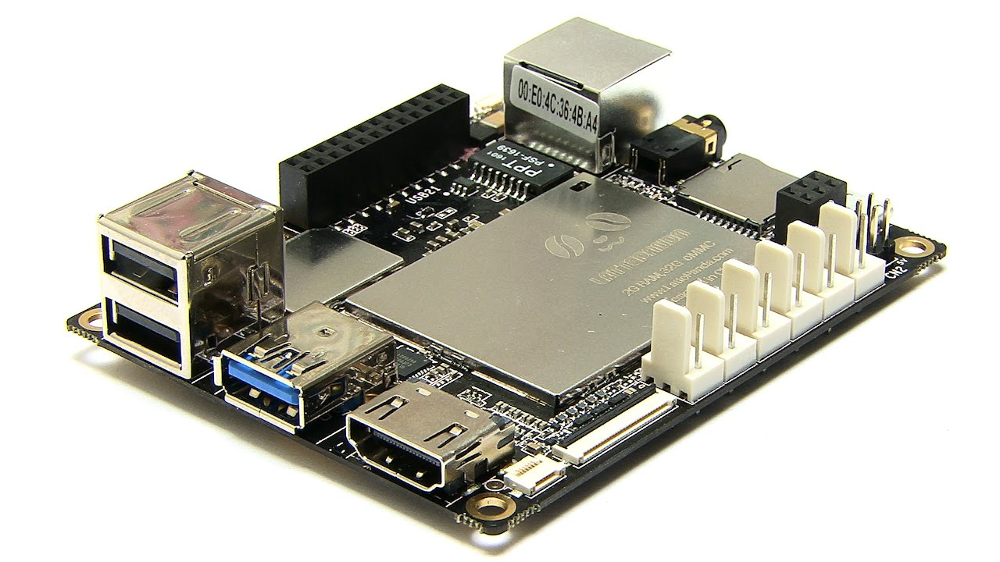
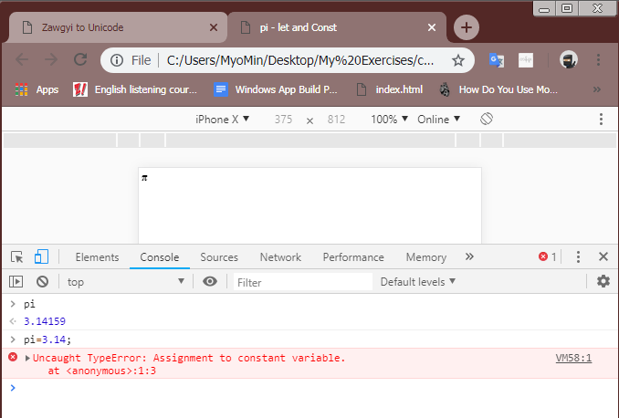
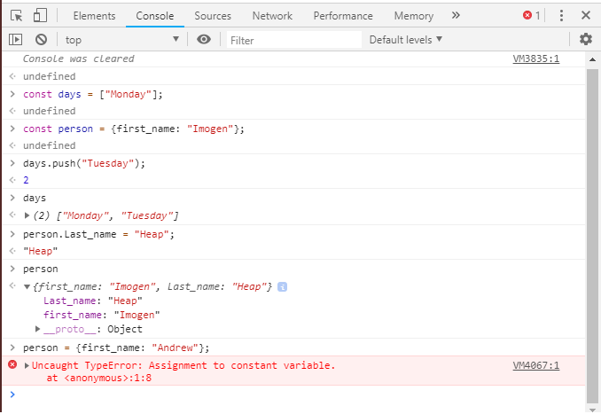
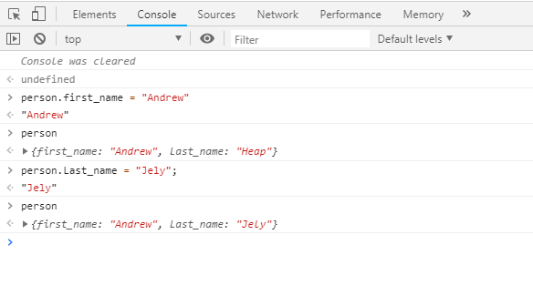

What You'll Learn
What is the internet of things?
Internet of Things (သို့) IoT ဆိုတာဘာလဲ။Internet of Things ဆိုတာကတော့ physical objects တွေကိုဖော်ပြတာဖြစ်ပြီး internet နဲ့ချိတ်ဆက်ထားတဲ့ sensors, software , electronics တွေပါဝင်တာတွေပဲဖြစ်ပါတယ်။Data တွေက collect ပြုလုပ်ပေးတယ် သို့မဟုတ် device တွေဆီကိုပို့ဆောင်ပေးတာပဲဖြစ်ပါတယ်။Internet
of Things devices တွေကနည်းလမ်းမျိုးစုံနဲ့ Internet တွေနဲ့ချိတ်ဆက်နိုင်ပါတယ်။Direct သို့မဟုတ် Wifi သို့ rounter နဲ့ချိတ်ဆက်ထားတဲ့ Ethernet တွေသို့မဟုတ် IoT devices တွေက gateway device တွေဖြစ်တဲ့ bluetooth နဲ့ smartphone တွေစတာမျိုး
device တွေနဲ့ချိတ်ဆက်နိုင်ပါတယ်။Zigbee နဲ့ Z-Wave လိုမျိုးအခြား wireless technologies တွေလည်းပဲရှိပြီးတော့ချိတ်ဆက်နိုင်ပါတယ်။ယနေ့ခေတ်မှာတော့ကျွန်တော်တို့တွေဟာ အမျိုးမျိုးသော IoT devices တွေကို smart phone တွေနဲ့ချိတ်ဆက်ပြီးတော့အသုံးပြုနေကြပါတယ်။
camera တွေ speaker တွေ နဲ့ light bulb တွေကိုပါ internet ချိတ်ဆက်ပြီးအဖွင့်အပိတ်ပြုလုပ်နိုင်ပါတယ်။နောက်ထပ်ထပ်ပြီးသုံးစွဲနိုင်တာတွေကတော့ Agriculture , Automotive , climate Research , Energy Savings Applications , Production lines တွေစတဲ့နေရာတွေမှာလည်းများစွာအသုံးပြုကြပါတယ်။
Single Board Computers
ဘာ့ကြောင့် Internet of Things တွေအတွက်ကျွန်တော်တို့တွေ JavaScript တွေကိုအသုံးပြုသင့်တယ်လို့ထင်လဲလို့မေးလာခဲ့ရင်တော့ ပထမကတော့အဲ့တာက asynchronous နဲ့ even-driven ဖြစ်လို့ပဲဖြစ်ပါတယ်။ကျွန်တော်တို့က input တွေသို့မဟုတ် sensor data တွေကိုဖတ်တဲ့အခါမှာ event
တွေကိုတွေ့ရဖို့ရန်အတွက် event listener တွေထပ်ပြီးထည့်နိုင်ပါတယ်။အဲ့တာက DOM element ထဲကို click listener တွေထည့်တဲ့ပုံနဲ့အတူတူပါပဲ။အခြား language တွေမှာတော့သူတို့ရဲ့ asynchronous programming တွေနဲ့ခက်ခဲပြီးတော့ javaScript ကတော့ built-in
ပါရှိတာဖြစ်ပြီးနောက် developer တွေ millions ပေါင်းများစွာအသုံးပြုကြပါတယ်။JavaScript က browser-base language တစ်ခုဖြစ်ပါတယ်။ကျွန်တော်တို့ရဲ့ stack တွေရဲ့ဘယ်နေရာမှာပဲဖြစ်ဖြစ် JavaScript ကိုအသုံးပြုနိုင်ပါတယ်။ကျွန်တော်တို့ရဲ့ dashboard
ကနေ browser ထဲကိုသွားပြီးတော့ server side ပေါ်မှာ data တွေကို collecting ပြုလုပ်နိုင်ပါတယ်။အခုအချိန်မှာတော့ electronic devices တော်တော်များများကသူတို့ကိုယ်တိုင်မှတ်သားနေနိုင်ပြီးဖြစ်ပါတယ်။JavaScript IoT တွေမှာ strategies သုံးမျိုးရှိပါတယ်။ပထမတစ်ခုကတော့
single Board Computer ဖြစ်ပါတယ်။ဒုတိယတစ်ခုကတော့ JavaScript Microcontroller နဲ့နောက်ဆုံးတစ်ခုကတော့ Client-Host Model ပဲဖြစ်ပါတယ်။single board computer ဆိုတာကတော့computer တွေက single board တစ်ခုပေါ်မှာ storage တွေ RAM တွေ processing
power တွေအားလုံးတည်ရှိတာကိုဆိုလိုပါတယ်။လူတွေအသုံးပြုတာအများဆုံး single board computer တစ်ခုကတော့ Raspbery Pi ဆိုတာပဲဖြစ်ပါတယ်။အဲ့ဒီထဲမှာ Wi-Fi,Internet နဲ့ bluetooth တွေ built-in ပါဝင်ပြီးသားဖြစ်ပါတယ်။Pi 3 နဲ့ Pi 2 တွေက Window 10 version
ပေါ်မှာလည်းပဲ run နိုင်ပြီး Core IoT edition လို့လည်းခေါ်ပါတယ်။Pi 0 ဆိုတာတွေကတော့ mobiles တွေအတွက်ပဲ run နိုင်ပြီး node.js တွေလည်းအလုပ်လုပ်နိုင်ပါတယ်။

Microcontrollers
Microcontrollers တွေဆိုတာကတော့ computer တွေပေါ်မှာသေးငယ်တဲ့ ပမာဏတွေရှိတဲ့ processing power တွေ RAM တွေပေါ်မှာအထူးပြုထားတာဖြစ်ပြီးတော့သူတို့ကမယုံနိုင်လောက်အောင်ကိုမြန်တဲ့ IEO တွေရှိပါတယ်။ဘာ့ကြောင့်လဲဆိုတော့သူတို့ကတစ်ခါအသုံးပြုဖို့အတွက် specialized ပြုလုပ်ထားတာပဲဖြစ်ပါတယ်။သူတို့မှာမကြာခန
power လုံလောက်မှုတွေရှိပါတယ်။processing power နည်းနေခြင်းက language တွေကိုဘာသာပြန်ပြီးတော့ run နိုင်ဖို့ prevent ပြုလုပ်မပေးနိုင်ပါဘူး။javaScript Runtimes တွေအတွက်အထူးပြုထားတဲ့ number တွေရှိပါတယ်။အဲ့တာတွေက Espruino, Smart.js, XS6 နဲ့
Samsung's JerryScript တွေကဲ့သို့သော microcontrollers တွေပေါ်မှာrun နိုင်ပါတယ်။ Espruino JavaScript Runtime ကတော့ပထမ Espruino board ပေါ်မှာပဲလာပါတယ်။Microcontrollers တွေအတွက် pros တွေကတော့ instand-on ဖြစ်ပါတယ်။နောက်ပြီးအဲ့တာတွေက single
board computers တွေထက်ပိုမြန်တဲ့ IO တွေရှိပါတယ်။သူတို့တွေကသေးငယ်ပြီးတော့ embeddable ပြုလုပ်ပြီးထားနိုင်ပါတယ်။အဲ့တာကြောင့်မတူညီတဲ့ projects တွေတော်တော်များများမှာထည့်ပြီးအသုံးပြုနိုင်ပါတယ်။ကျွန်တော်တို့တွေ sensor သို့မဟုတ် third party
screen တွေကနေပြီးတော့အသုံးပြုတာတွေကိုလိုချင်ရင်တော့ javaScript တွေအတွက်ကန့်သတ်ထားတဲ့ထောက်ပံ့ပေးနိုင်တဲ့ libraries တွေရှိဖို့လိုပါတယ်။
Client-Host Model
ကျွန်တော်တို့က software တွေကို microcontroller ပေါ်မှာ install တင်တဲ့အခါမှာ powerful ပိုဖြစ်တဲ့ computer တွေကနေမှ instruction တွေကိုစောင့်ပေးရပါတယ်။ကျွန်တော်တို့ကိုယ်တိုင်မြှင့်တင်ချင်တယ်ဆိုရင် specialized software တွေကို device ပေါ်မှာတင်ပြီၤးတော့အများဆုံးအသုံးပြုတာကတော့
Firmata ဖြစ်ပါတယ်။ ကျွန်တော်တို့ကပထမအဆင့်အနေနဲ့ node.js ကိုတင်ပေးရမှာပဲဖြစ်ပါတယ်။Host computer တွေက node.js တွေ run ပြီးတော့ laptop သို့မဟုတ် desktop တွေဖြစ်လာဖို့မရှိပါဘူး။အများဆုံးအသုံးပြုတဲ့ microcontroller bolts တွေကတော့ Arduino
Uno ပဲဖြစ်ပါတယ်။Arduino 101 မှာတော့ intel Bluetooth chip အတွင်းထဲမှာပါဝင်ပြီးတော့ wireless device လို့ပြောနိုင်ပါတယ်။ကျွန်တာ်တို့က Node.js တွေကိုထည့်ဖို့ရန်အတွက် framework တွေလိုအပ်ပါတယ်။Johnny-Five နဲ့ https://cylonjs.com/>Cylon.js ဆိုတဲ့ libraries တွေကိုအသုံးပြုပြီးပြုလုပ်နိုင်ပါတယ်။

Introduction const & let
JavaScripts တွေမှာဆိုရင်တော့ variables တွေကို create လုပ်ဖို့အတွက်နည်းလမ်းတစ်ခုပဲရှိပါတယ်။var keyword ကိုအသုံးပြုခြင်းပဲဖြစ်ပါတယ်။JavaScript programmers တွေအများစုကတော့အဲ့ဒီ method ကိုလေ့လာကြပါတယ်။အခုအချိန်ထိကျွန်တော်တို့ အချိန်တော်ကြာအောင် var keyword ကိုအသုံးပြုပြီးနေကြပါသေးတယ်။ဒါပေမယ့်တစ်ချို့နေရာတွေမှာ var တွေကိုအသုံးပြုခြင်းကပြသနာတွေမမျှော်လင့်ထားတာတွေဖြစ်နိုင်ပါတယ်။အဲ့တာကြောင့် javaScript programming language ကိုအသုံးပြုကြတဲ့ developer တွေက variables တွေကိုတည်ဆောက်ဖို့အတွက်နည်းအသစ်ကိုဆုံးဖြတ်ပြီးမိတ်ဆက်ခဲကြပါတယ်။JavaScript ရဲ့ version 6 ဖြစ်တဲ့ ES2015(ECMAScript) လို့ခေါ်ပြီးတော့ const နဲ့ let ဆိုတဲ့ keyword နှစ်ခုကိုမိတ်ဆက်ခဲ့ပါတယ်။ဒီတစ်ခါမှာတော့ကျွန်တော်တို့ အဲ့ဒီ keyword နှစ်မျိုးကိုလေ့လာသွားမှာပဲဖြစ်ပါတယ်။ပထမကျွန်တော်တို့ const နဲ့ let ဆိုတာတွေက var keyword နဲ့အလုပ်လုပ်ပုံဘယ်လိုတူညီသလဲဆိုတာကိုလေ့လာသွားမှာဖြစ်ပါတယ်။ keywords တွေအကုန်လုံးမှာတော့ variable name တွေလိုက်ပြီးရေးကြရပါတယ်။အဲ့ဒီနောက်မှာတော့ equal sign ရေးပြီးကျွန်တော်တို့ထားချင်တဲ့ value တွေပေးခဲ့လို့ရပါတယ်။
Why should use const & let?
ပထမကျွန်တော်တို့ variable တွေကိုသတ်မှတ်တဲ့အခါမှာ const keyword ဖြစ်တယ်ဆိုတာကိုကျွန်တော်တို့ဆုံးဖြတ်သင့်ပါတယ်။const ဆိုတာကတော့ constant ရဲ့အတိုကောက်ဖြစ်ပြီးဆိုလိုတာကတော့ Variable ရဲ့ value တွေကပြောင်းလဲမှုမရှိပဲ constant အဖြစ်ကျန်ရှိနေနိုင်မှာပဲဖြစ်ပါတယ်။ဥပမာ
const pi က 3.14159 နဲ့ညီမျှတယ်လိုပေးထားတာပဲဖြစ်ပါတယ်။constant ကကျွန်တော်တို့ code တွေထဲမှာပြန်ပြီ assignလုပ်တာတွေပြောင်းလဲချင်းတွေကိုကာကွယ်ပေးပါတယ်။နောက်ထပ်ကျွန်တော်တို့တွေက value တွေကိုလည်းပြန်ပြောင်းပြီးမသတ်မှတ်နိုင်ပါဘူး။အောက်ပါပုံထဲမှာvalue
တွေအစားပြန်ပြီးထည့်လို့မရတာကိုဖော်ပြထားပါတယ်။အဲ့တာကတော့ကျွန်တော်တို့ const ကိုအသုံးပြုရတဲ့ပထမအချက်ပဲဖြစ်ပါတယ်။number တွေသတ်မှတ်ပြီးသိုလှောင်ဖို့အတွက်ပဲအသုံးပြုနိုင်ပြီး program run တဲ့အချိန်မှာလည်းမပြောင်းပဲတည်ရှိနေပါလိမ့်မယ်။const
ထဲမှာမည်သည့် value ကိုမဆို assign ပြုလုပ်နိုင်ပါတယ်။ဥပမာကျွန်တော်တို့က game တွေအတွက်ရေးတဲ့အခါမှာတော့ score တွေကပြောင်းနေမှာဖြစ်လို့ const ကိုအသုံးမပြုသင်ပါဘူး။ let ဆိုတဲ့ keywords ကိုပဲအသုံးပြုသင့်ပါတယ်။ကျွန်တော်တို့အောက်ပါဥပမာထဲမှာတော့
const တွေကိုအသုံးပြုပြီး overwrite မဖြစ်ဘူးဆိုတာကိုဖော်ပြထားပါတယ်။

const name = "Andrew";
function createFullName(fName, lName) {
const name = fName + "" + lName;
console.log(name);
}
console.log(name);
createFullName("Joel", "Kraft");
Using Const
Number တွေ Strings တွေနဲ့ constant variable ထဲကို reassign ပြန်ပြီးလုပ်လို့မရဘူးဆိုတာကျွန်တော်တို့မြင်ပြီးဖြစ်ပါတယ်။အဲ့ဒီလိုပဲအခြား variable တွေဖြစ်တဲ့ strings, numbers, booleans, objects နဲ့ arrays တွေကိုလည်းကျွန်တော်တို့ reassign ပြန်မလုပ်နိုင်ပါဘူး။မတူညီတာကတော့
array ထဲမှာ method တွေ properties တွေနဲ့ strings, numbers ,တွေ booleans တွေ objects တွေက object သို့မဟုတ် array ပေါ်မှာ modify ပြုလုပ်နိုင်ပါတယ်။ကျွန်တော်တို့အောက်မှာပြထားတဲ့ပုံထဲမှာတော့ ပထမ clear() ဆိုတာကိုရေးထားပါတယ်။အဲ့တာက console
တွေကိုရှင်းပေးတာပဲဖြစ်ပါတယ်။နောက်ပြီးကျွန်တော်တို့က day ဆိုတဲ့ variable ကို const နဲ့ကြေငြာပေးထားတာပဲဖြစ်ပါတယ်။ပထမအဲ့ဒီထဲမှာ array နဲ့ string တစ်ခုပါရှိတာပဲဖြစ်ပါတယ်။ နောက်ပြီးနောက်ထပ် constant variable တစ်ခုကိုကျွန်တော်တို့ထပ်ကြေငြာထားပါတယ်။အဲ့ဒီထဲမှာတော့
string တစ်ခုပါရှိတဲ့ first_name ဆိုတဲ့ object တစ်ခုတိုက်ရိုက်ပါရှိပါတယ်။days ဆိုတဲ့ array ထဲကိုနောက်ထပ် day တွေထပ်ထည့်ဖို့အတွက် push method ကိုအသုံးပြုပေးရမှာပဲဖြစ်ပါတယ်။day string တစ်ခုကိုကျွန်တော်တို့ထပ်ထည့်လိုက်တဲ့အခါမှာတော့ 2 ဆိုတဲ့
number ကိုreturn ပြန်ပေးမှာပဲဖြစ်ပါတယ်။ဆိုလိုတာကတော့ array length ကိုဖော်ပြတာပဲဖြစ်ပါတယ်။ကျွန်တော်တို့က days ဆိုတာကိုရိုက်ပြထားပါတယ်။အဲ့ဒီမှာတော့ array ကိုထုပ်ပြီးပြထားတာပဲဖြစ်ပါတယ်။နောက်ထပ်ကျွန်တော်တို့က last_name ဆိုတာကိုလည်းထပ်ပြီးကြေငြာထားတာဖြစ်ပါတယ်။const
တွေက array တွေ objects တွေကို modified ပြုလုပ်တဲ့အခါတွေမှာတော့ရှုပ်ထွေးမှုတွေကို prevent ပြုလုပ်မပေးပါဘူး။reassigned သို့ over written တွေပြုလုပ်တဲ့အခါမှ prevent ပြုလုပ်ပေးတာပဲဖြစ်ပါတယ်။ဥပမာပုံထဲမှာရေးပြထားသလိုပဲကျွန်တော်တို့တွေက person
ရဲ့ first_name ထဲကိုပြန်ပြီးပြင်မယ်ဆိုရင်တော့ error တက်လာမှာပဲဖြစ်ပါတယ်။

ဒါပေမယ့်လည်းကျွန်တော်တို့အောက်ပါဥပမာထဲမှာ modified ပြုလုပ်ပေးပြထားပါတယ်။first name ရဲ့နေရာကို modified ပြုလုပ်ပြထားတာပဲဖြစ်ပါတယ်။

Using Let
variables တွေကို re-assign ပြုလုပ်ချင်တဲ့အခါမှာတော့ let keyword ကိုအသုံးပြုကြပါတယ်။let keyword တွေက loops တွေအတွက်အမှန်တကယ်အသုံးဝင်တဲ့ keyword ပဲဖြစ်ပါတယ်။var keyword တွေကိုအသုံးပြုခြင်းက for loop ထဲမှာ counter တွေကိုသတ်မှတ်ပေးတဲ့အခါမှာတစ်ခါတစ်ရံမှာရှုပ်ထွေးနိုင်ပြီးတော့မမျှော်လင့်တဲ့
outcome တွေလည်းထွက်လာနိုင်ပါတယ်။ကျွန်တော်တို့ဖော်ပြထားတဲ့ scope 1 ဥပမာထဲမှာလို for Loop အတွင်းထဲမှာ i ကိုကြေငြာခဲ့တယ်ဆိုရင် အဲ့တာက global scope လို့ခေါ်ပါတယ်။နောက်ထပ်ဥပမာထဲမှာရေးထားသလိုအပြင်မှာရေးပေးမှ local ကြေငြာတာဖြစ်ပြီးကောင်းကောင်းအလုပ်လုပ်ပါတယ်။ကျွန်တော်တို့က
let ကိုသုံးခဲ့မယ်ဆိုရင်တော့ အလိုအလျောက်ကောင်းမွန်စွာအလုပ်လုပ်ပေးနိုင်မှာဖြစ်ပါတယ်။
<script>
const buttons = document.getElementsByTagName("button");
for (let i = 0; i < buttons.length; i++) {
const button = buttons[i];
button.addEventListener("click", function() {
alert("Button " + i + " pressed");
});
}
</script>
Overview
အကုန်လုံးကိုခြုံပြီးပြောမယ်ဆိုရင်တော့ constants တွေကို variables တွေdeclare လုပ်တဲ့နေရာမှာကျွန်တော်တို့ဦးစားပေးအသုံးပြုရပါမယ်။အဲ့တာတွေက bugs တွေ reassignment ပြုလုပ်တဲ့အခါတွေမှာကာကွယ်ပေးပြီးတော့ code တွေကို run တဲ့အခါမှာပိုပြီးမြန်နိုင်အောင်လည်းကူညီပေးပါတယ်။const variables တွေက block level scoping တွေပဲဖြစ်ပါတယ်။code block တွေဆိုတာကတော့ curly braces အတွင်းထဲမှာရှိတဲ့အရာတိုင်းပဲဖြစ်ပါတယ်။let keyword ကတော့ var အတွက်အစားထိုးပြီးအသုံးပြုဖို့အတွက်အကောင်းမွန်ဆုံးတစ်ခုဖြစ်ပါတယ်။အဲ့တာက for loop တွေကိုအသုံးပြုတဲ့အခါမှာ error တွေကိုကာကွယ်ပေးပြီးတော့ web pages တွေကို dynamic functionally တွေထည့်ပေးနိုင်ပါတယ်။


Can Request Example project File